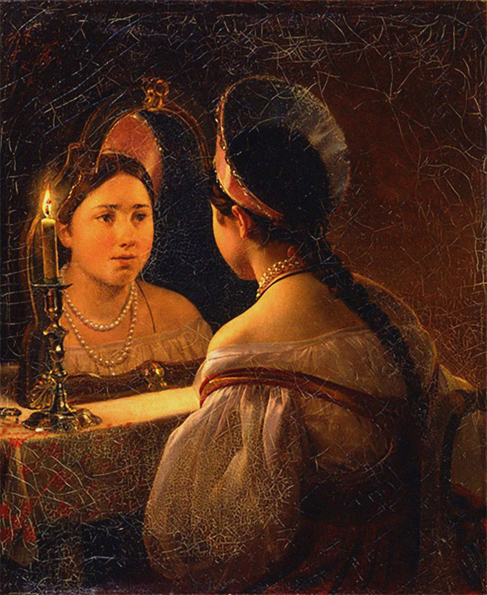
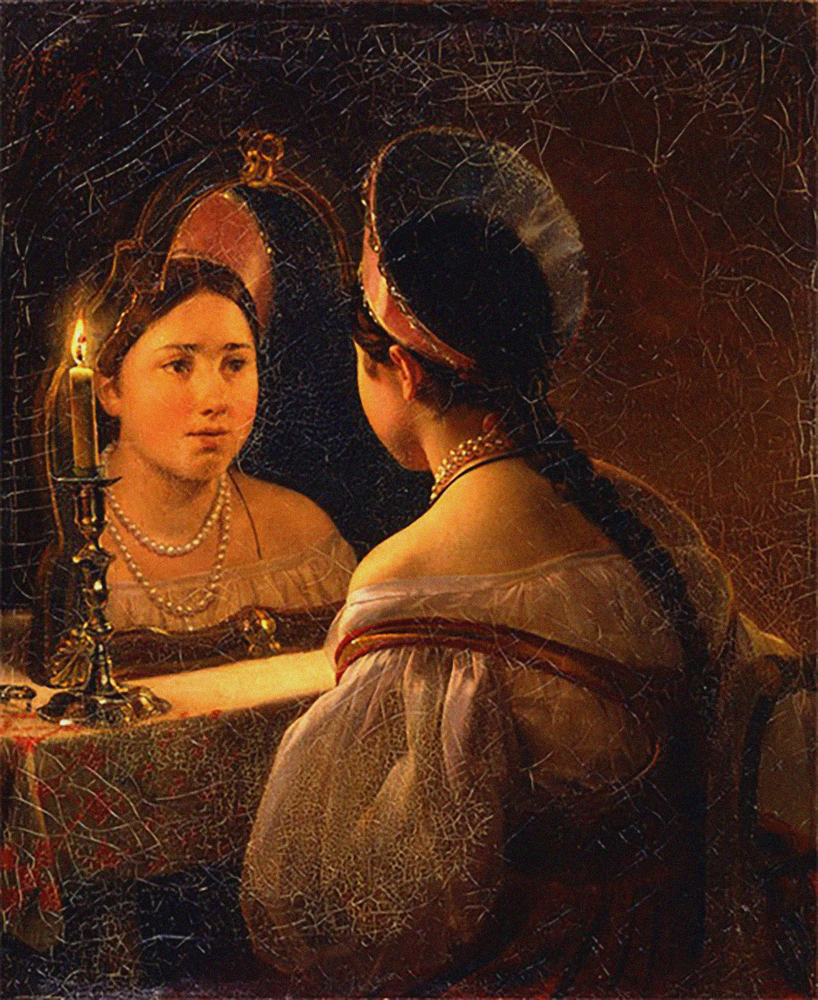
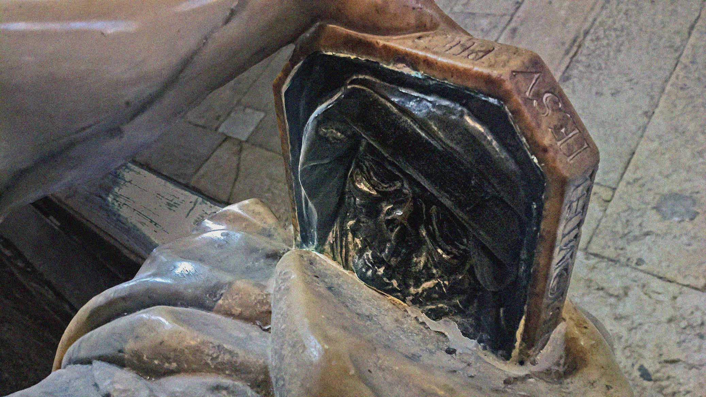
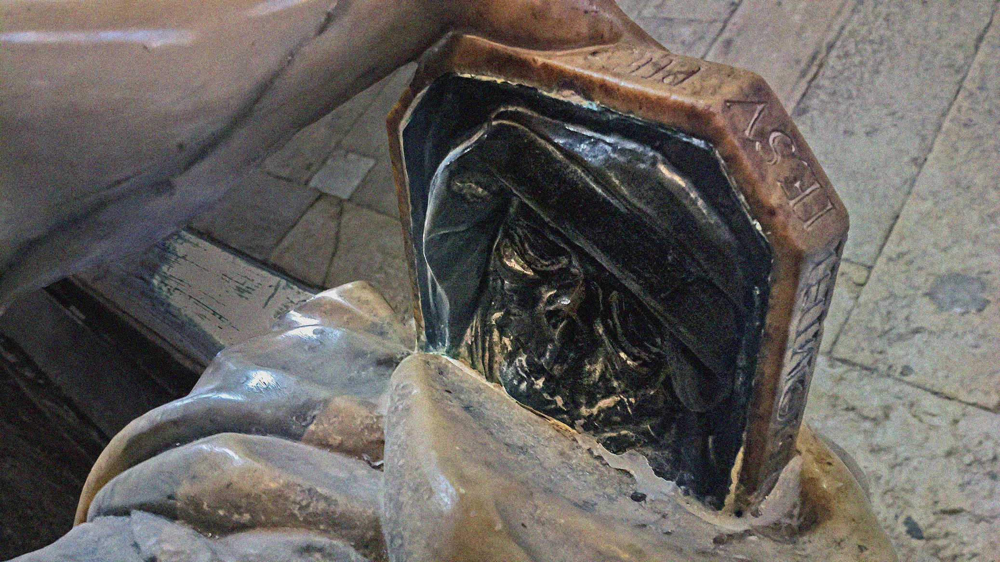

 

The Gaze Without and Within: Self-Portrait as Discovery, Disclosure, and Bravura Metacommentary
She felt herself reflected in their watchful mirror-eyes, and was forced to see herself as they saw her. Arthur Koestler, Age of Longing (1951)
Self-portraits in Europe date from the late fifteenth century, enabled by several factors: technical improvements in glassmaking, which made flat mirrors of a reasonable size widely available; the revolution in oil painting, which allowed artists to paint in studios rather than on the walls of churches and palaces; and the transformation of the artist’s status, from artisan to member of the social and intellectual elite. Painters of self-portraits adopted the mirror as an indispensable tool for self-representation, as confirmation of authorship, and as a forum for commentary on perspective. In fact, mirrors became a staple of artists’ studios. Like Alberti, Leonardo da Vinci, whose famous mirror writing continues to generate polemics about its motivation, championed the mirror as the equivalent of the painter’s mind, the verifier of resemblances, and the eye’s educator, while also acknowledging its implication in illusion by manipulating those resemblances of his Notebooks recommends reliance on the mirror as “the true master of painting” for one’s guide, “because on its surface the objects appear in many respects as in a painting”; therefore “when you paint you should have a flat mirror and often look at your work as reflected in it”. Acting upon his own counsel, da Vinci reportedly availed himself of the mirror to correct defects in his canvasses just as Rembrandt consulted it for his forty-odd self-portraits, as well as etchings and drawings of his own likeness.
With such notable (late) exceptions as Eug ne Delacroix and Gustave Courbet, who worked from photographs, most self-portraitists copied their faces as seen in a mirror. Albrecht Dürer at the age of thirteen or fourteen (1484) made a silverpoint drawing of himself, inscribing the words “I drew this using a mirror”. Artists such as Francesco Parmigiano (1524) seemed fascinated by the mirror as painters’ sole means at the time of capturing their own likeness, though the distortion typical of convexity enlarged whatever was foregrounded (fig. 11). Others visually signed their works devoted to other subjects by incorporating their own miniature self-portraits in mirrors. The most renowned examples remain Van Eyck’s Arnolfini Marriage (1434), which creates the illusion that the artist is both “in and outside the picture”, and Vel zquez’s Las Meninas (1656-57). Such devices not only flaunted artists’ ingenuity, but also testified to their enduring experimentation with perspective and art’s fabled capacity for faithful representation, extended through the mirror.
Clara Peeters, one of the cleverest practitioners of still lifes (a thriving genre during the seventeenth century), experimented with an intriguing mode of multiple self-representation, which reprised the ancient dependence on polished metal surfaces for reflection and showcased various objects’ manifold mirroring features. Her virtuoso works include paintings in which several polished surfaces reflect her visage, as, for example, Still Life with Flowers and Gilt Cup (1612), where her distorted reflection (holding brush and palette) appears repeatedly in a cup. More complex in its treatment of proliferation and perspective is the Austrian Johannes Gumpp’s self-portrait of 1646 (fig. 13). It offers the artist in triplicate, as the active figure with his back to us, the image reflected in the mirror, and the image of that image on canvas. Accessible only indirectly via the mirror, where it is reflected, and the portrait, where it is reproduced, in the foreground the artist’s face is replaced with the back of his head. Gumpp’s manipulation of perspectives “exposes the portrait’s claim to documentary truth as a clever deceit, and dramatizes the part played in acquiring self-knowledge by seeing oneself and being seen, knowing oneself and being known” (Art Gallery NSW). Though apparently indifferent to repetition, Magritte shared Gumpp’s preoccupation with the illusory aspect of self-portraits and other painterly genres. Ever insistent on the distinction between phenomena and their artistic representation, Magritte materialized his philosophy of art in paintings that dramatize the gulf between life and its ostensible facsimile on canvas, where, as Robert Hughes puts it, “vignettes of language and reality lock[ed] in mutual cancellation” (155). Magritte’s skeptical pseudo-self-portrait (1937)—actually a portrait of his friend Edward James—in the series titled Reproduction Prohibited characteristically contests the predetermined notion of art as a veracious replication of physical reality, in this instance, one’s own person. The portrait overturns conventions by presenting the back of the head, impossibly iterated in the mirror.
The “new climate of introspection” (Borzello 140) ushered in by the twentieth century inclined artists increasingly to trope the mirror in their self-portraits as self-exploration and inducement to profound thought, such as Marie-Louise von Motesicsky in Self-Portrait with Pears (1965). External reflection here stimulates inner reflection in a philosophical vein. At the same time, specifically women’s self-portraits toward the end of the century recuperated and modernized the Renaissance Vanitas theme, as in Helen Chadwick’s (1953-96) Vanity II in her Mutability series (1986), where, near-naked and surrounded by pastel curtains and white feathers, she stares intently at herself in a huge round mirror, as if attempting to locate an individual self amidst culturally coded, stereotypically feminine trappings. Feminism indisputably influenced this trend, also prevalent in photography as the more modern mirror (e.g., Cindy Sherman), which investigates and disavows socially imposed feminine identities rendered orthodox through masterpieces by some of the world’s most adulated male painters—a topic pioneered by John Berger in his milestone study Ways of Seeing (1972).
As an instance of this gendered dialogue with predecessors, the feminist photorealist painter and sculptor Audrey Flack’s (b. 1931) vivid Wheel of Fortune (1977-78), teeming with bright colors, pointedly returns to female painters of seventeenth-century still lifes such as Peeters to portray the cycle of her own life as chance, time, and worldly pleasures—a symbolically displaced life of items identified with a photograph of her smiling young face. Shown only in a round mirror at the upper left corner, the snapshot in its positioning trumps the reflection of a skull visible in a partial mirror below (Borzello 197). Flack distances herself from the culturally entrenched constellation of mortality symbols that she reproduces—Vanitas mirror, candle, skull, fruit, and hourglass—by recasting the burning candle as a source of light and incorporating not only a calendar, which measures time by months, not hours, but also a tarot card to convey the human urge to glimpse the future.25 Partly through a transvaluation of objects, brilliant hues, and an overall cheerful kitschiness, Flack interrogates the gloom of Vanitas works as dire reminders of mortality. The interplay of mirrors and space also has innovated specular gendering strategies in a somewhat different key. For instance, repetition, facilitated by mirrored ceilings and walls, holds center stage in the installations of the contemporary Japanese artist Yayoi Kusama (b. 1929), who strives to merge realia with her psychologically fraught artistic vision and conceives of mirrors as an endless extension into infinity. She calls the proliferation of rhythmic polka dots, which are her trademark, infinity nets. And the mirrored multiplication that she relentlessly pursues psychosomatically parallels her bodily self with objects and patterns in a boundless iteration. Such a concept of reflection recalls the unblemished mirror of the Virgin Mary, though in secular and therefore potentially chilling mode, for Kusama’s somewhat unsettling infinity is not that of a timeless paradise.